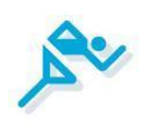
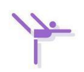
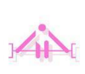
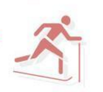

基本背景
| 基本信息 | |||||||
|---|---|---|---|---|---|---|---|
| 地区 | 学校名称 | 学生人数 | 日期 | ||||
| 北京市门头沟 | 大峪二小 | 1462人 | 2018年01月12日 | ||||
| 背景介绍 | |||||||
|
为进一步贯彻落实中共中央国务院《关于加强青少年体育增强青少年体质的意见》（中发
[2007]7号）、市委市政府《关于加强青少年体育增强青少年体质的实施意见》（京发[2008]6号）第四条“建立和完善学生体质健康评估机制”精神，根据市教委年度工作计划要求，结合门头沟区工作实际，于2017年10月16日—26日展开中小学生全员国家学生体质健康标准测试，建立区学生健康管理数据平台，从学生身体形态、身体机能、身体素质以及体质健康综合评价等方面对学生体质健康状况进行评估。全面评估各校学生健康情况，提高全区师生健康意识，提升学生体质健康水平。
|
|||||||
总体结果
全区分数排名
各项指标全区分数排名
第9名

速度
第7名
耐力
第1名

柔韧
第4名
爆发力
第2名

力量
第22名

BMI
第5名
肺活量
低年级（1-2年级）
中年级（3-4年级）
高年级（5-6年级）
分项结果
BMI
建议
对于BMI高于正常值的学生：
1.建议学生应该加强运动，提醒家长可以饭后或者周末陪同孩子散散步，有助于身体形态的健康发展。
2.建议学生注意饮食，不要暴饮暴食，有助于保持身体匀称度。
对于BMI低于正常值的学生：
1.建议学生注意饮食营养均衡，按时吃饭，有助于身体素质的发展。
2.建议学生增强体育锻炼，可以跑步、跳绳，有助于运动能力的提升，并拥有健康的体魄。
肺活量
建议
1.建议做运动呼吸：在运动过程中，先是慢慢吸气，随着吸气将胸廓逐渐拉大，然后快速呼气，每次锻炼反复练习20次以上，有助于提升人体心肺功能。
2.建议采取跑步训练法，特别是变速跑，有助于增强肺活量的提升。
3.建议采取游泳训练法：练习潜水或游泳，有助于心肺功能的提升。
爆发力
建议
1.建议在体育课上，可以适当做一些半蹲跳或是蛙跳，有助于提升不同肌肉间的相互协调能力。
2.建议负重练习，原地跑，肩负杠铃（杠铃重量是本人所能承受的最大重量的40%—50%），跑时尽量将大腿抬高，使大腿面与躯干垂直，形成90度夹角，重复15—20次，有助于提升力量素质。
3.建议在保证自身安全下，快速上下台阶，双臂交叉仰卧起坐、引体向上等运动，有助于提升速度素质。
力量
建议
1. 建议增加单腿跳、双腿跳、单双腿越障跳跃、利用杠铃挺举、负重深蹲、负重半蹲跳、负重转体等相关运动，有助于提升腿部力量。
2.建议增加双手曲体持实心球投、单手持球（网球）投、持亚玲推举、直臂前上举、体前曲平举、手臂弯举等相关运动，有助于提升学生臂部力量。
3.建议增加仰卧起坐、仰卧起坐转体、仰卧两头起、双手持球后弯曲向前投等相关运动，有助于提升学生腰腹部力量。
柔韧
建议
1.建议保持正确的坐位体前屈锻炼姿势：坐在地上，双腿伸直，双手够脚，向下压，有助于提升学生柔韧。
2.建议学校增加健美操或瑜伽方面的练习，有助于增强学生关节、肌肉和韧带的伸展能力。
3.建议增强家校合作，提醒家长在可在空闲之余陪孩子一起做仰卧起坐、瑜伽，有助于带动孩子体育锻炼的积极性。既锻炼了自己，也浓厚了和孩子的感情。
耐力
建议
1.建议学校体育课适当增加匀速跑运动，有助于提升学生的耐力。
2.建议保证学生安全的前提下，做一些游戏类型的追逐跑、负重跑、接力跑等，有助于提升耐力。
3.建议适当进行晨跑或是晚跑运动，有助于提升学生的耐力。
速度
建议
1.建议体育课中定期增加一些50M×4接力跑，60M、80M、100M加速跑，60M、100M、200M重复跑这些运动，有助于提升学生的爆发力、反应等素质。
2.建议在保障安全的前提下，负重较轻杠铃同时快速的做纵跳练习，或是台阶跳等运动，有助于提升学生的灵敏性。
建议结论
结论
建议
1.建议学校应加强宣传，树立“健康第一”的指导思想，引导学生参与体育锻炼，在体育锻炼中享受体育带来的快乐，缓解学习压力，并掌握运动技术，为终身体育打下坚实的基础。
2.建议学校加强体育锻炼和技能方面的指导，认真落实每天一小时体育锻炼时间。通过开展丰富多彩的课外体育活动，营造学生的体育锻炼氛围，培养学生体育锻炼的积极性和主动性。
3.建议学校针对学生不良的生活方式和饮食行为习惯，采取措施，定期举办关于健康方面的知识讲座活动，聘请相关专家、教授授课，从而引导学生注意不良的生活方式与习惯带来的危害，并加强管理，促使学生健康、规律的生活。
4、建议学校加大体育工作的投入，按照学生的比例进行体育场地器材的设置，进行规范化的管理，为学校体育工作的开展和学生体质健康的增强提供保障。
附录
| 术语解释 | ||
|---|---|---|
| 耐力 | 耐力是指机体长时间进行肌肉活动并对抗疲劳的能力。有关研究表明，要想阻止学生体质的下降，首先是阻止学生耐力素质体能的下降。 | |
| 速度 | 速度是反映人体中枢神经系统的技能状态与肌肉的调节机能，可以综合反应人体的爆发力、灵敏、反应等素质。 | |
| 柔韧 | 柔韧是指人体活动时，关节、肌肉和韧带的伸展能力。坐位体前屈是测试人体柔韧的常用测试项目。长时间缺乏锻炼会阻碍关节韧带的灵活性，肌肉弹性降低，运动牵拉时可能伤及韧带。 | |
| 力量 | 力量是指人的机体或机体的某一部分肌肉工作（收缩和舒张）时克服内外阻力的能力。内部阻力包括肌肉的粘滞力、关节的加固力及各肌肉间的对抗力等。 | |
| 爆发力 | 爆发力是指“在最短时间内，产生最大力量的能力”，爆发力由两个有机组成部分确定，即速度与力量。爆发力实质是指不同的肌肉间的相互协调能力，力量素质以及速度素质相结合的一项人体体能素质。 | |
| BMI | BMI（体重指数）是用体重公斤数除以身高米数平方得出的数字，是目前国际上常用的衡量人体胖瘦程度以及是否健康的一个标准，是反映人体形态发展变化的重要指标。 | |
| 肺活量 | 肺活量是指在不限定时间的情况下，一次最大吸气后，尽最大力量所能呼出的最大气体量，这代表肺一次最大的机能活动量，是检测肺功能的最直观、也是最客观的指标。 | |
| 分数等级 | 不及格是指得分在59.9分及以下，及格是指得分在60.0-79.9分之间，良好是指得分在80.0-89.9之间，优秀是指得分在90.0分及以上。 | |